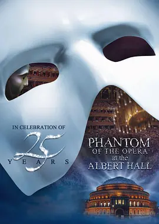

9.7
剧院魅影：25周年纪念演出
The Phantom of the Opera at the Royal Albert Hall
2011
英国
评分 9.7
导演:
尼克·莫里斯 / Laurence Connor
演员:
莱明·卡莱姆罗 / 席爱拉·博格斯 / 哈德利·弗雷泽 / Sergei Polunin
类型:
剧情,歌舞,音乐
剧情简介
在伦敦皇家阿尔伯特音乐厅的穹顶下，《剧院魅影》25周年庆典以盛大仪式揭开序幕。灯光从高处缓缓洒落，一层层落在古典建筑的雕饰上，让整个空间像沉入金色的海中。观众席人声未起，乐队已轻声调弦，熟悉的主题旋律仿佛提前在空气里震颤。舞台中央，幽灵与克里斯蒂娜的身影在交错的光束中显现，他们的对唱将昔日舞台的激情重新点燃，也让观众沉浸在这段跨越年代的音乐传奇之中。演出保留了经典叙事，同时借助音乐厅独特的空间结构，让交响、合唱与舞台调度交织得更为壮阔。克里斯蒂娜在“夜之乐章”中的高音清澈而直击人心，幽灵的歌声则在大厅穹顶回荡，带着未能言说的孤独与占有欲。两人的情感纠葛在音乐中不断升温，仿佛通过每一次呼吸与步伐诉说着彼此的依恋与挣扎。当幕布后的管风琴轰然发声，舞台气氛从浪漫转向压迫，仿佛带观众进入幽灵的内心深处。舞台设计以极简方式呈现剧院暗道、深井与回廊，利用灯光与空间制造迷宫般的视觉效果，使角色的心理紧张得以无声扩散。每一次换景、每一次合唱的推进都形成鲜明节奏，让这场纪念演出既回望经典，又展现现场独有的震撼。演出最后，当历代扮演“魅影”的艺术家在舞台上齐聚，掌声在音乐厅中久久不散，这种横跨数十年的传承感让整场表演提升为对舞台艺术的礼赞，也让这部作品在观众心中再次焕发不朽魅力。